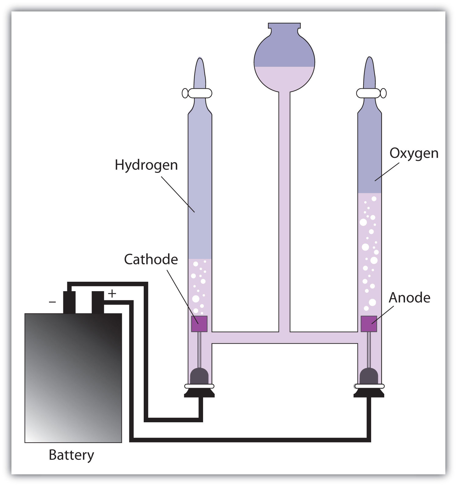

Up to this point, we have considered redox reactions for processes that are spontaneous. When set up as a voltaic cell or battery, such reactions can be used as a source of electricity. However, it is possible to go in the other direction. By forcing electricity into a cell, we can make a redox reaction occur that normally would not be spontaneous. Under these circumstances, the cell is called an electrolytic cellA cell into which electricity is forced to make a nonspontaneous reaction occur., and the process that occurs in the cell is called electrolysisThe process of making a nonspontaneous redox reaction occur by forcing electricity into a cell. (Figure 14.5 "Electrolysis").
Figure 14.5 Electrolysis
In an electrolytic cell, electricity is forced through the cell to induce a nonspontaneous redox reaction. Here, the redox reaction 2H2O → 2H2 + O2 is being caused by the introduction of electricity, which is supplied by the battery.
Electrolysis has many applications. For example, if NaCl is melted at about 800°C in an electrolytic cell and an electric current is passed through it, elemental sodium will appear at the cathode and elemental chlorine will appear at the anode as the following two reactions occur:
Na+ + e− → Na 2Cl− → Cl2 + 2e−Normally we expect elemental sodium and chlorine to react spontaneously to make NaCl. However, by using an input of electricity, we can force the opposite reaction to occur and generate the elements. Lithium, potassium, and magnesium can also be isolated from compounds by electrolysis.
Another element that is isolated by electrolysis is aluminum. Aluminum formerly was a difficult metal to isolate in its elemental form; in fact, the top of the Washington Monument has a 2.8 kg cap of aluminum metal, which at the time—1884—was the largest piece of elemental aluminum ever isolated. However, in 1886 the American Charles Hall and the Frenchman Paul Héroult almost simultaneously worked out an electrolytic process for isolating aluminum from bauxite, an ore of aluminum whose chemical formula is AlOx(OH)3 − 2x. The basic reactions are as follows:
Al3+ + 3e− → Al 2O2− → O2 + 4e−With the development of the Hall-Héroult process, the price of aluminum dropped by a factor of over 200, and aluminum metal became common. So much elemental aluminum is produced in the United States each year that it has been estimated that the electrolysis of aluminum uses 5% of all the electricity in the country. (Recycling aluminum requires about 1/70th the energy of refining aluminum from ore, which illustrates the tremendous energy savings that recycling provides.)
Another application of electrolysis is electroplatingThe deposition of a thin layer of metal on an object for protective or decorative purposes., which is the deposition of a thin layer of metal on an object for protective or decorative purposes (Figure 14.6). Essentially, a metal object is connected to the cathode of an electrolytic cell and immersed in a solution of a particular metal cation. When the electrolytic cell is operated, a thin coating of the metal cation is reduced to the elemental metal on the surface of the object; the thickness of the coating can be as little as a few micrometers (10−6 m). Jewelry, eating utensils, electrical contacts, and car parts like bumpers are common items that are electroplated. Gold, silver, nickel, copper, and chromium are common metals used in electroplating.
Define electrolytic cell.
How does the operation of an electrolytic cell differ from a voltaic cell?
List at least three elements that are produced by electrolysis.
Write the half reactions for the electrolysis of the elements listed in Exercise 3.
Based on Table 14.1 "Standard Reduction Potentials of Half Reactions", what voltage must be applied to an electrolytic cell to electroplate copper from Cu2+?
Based on Table 14.1 "Standard Reduction Potentials of Half Reactions", what voltage must be applied to an electrolytic cell to electroplate aluminum from Al3+?
an electrochemical cell in which charge is forced through and a nonspontaneous reaction occurs
any three of the following: Al, K, Li, Na, Cl2, or Mg
0.34 V